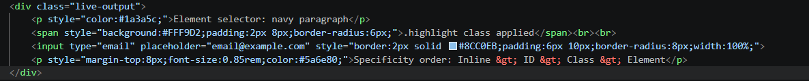

Selectors are used to target elements whereas specificity decides which rule wins when two rules clash.
Code

Live Output
Element selector: navy paragraph
.highlight class appliedSpecificity order: Inline > ID > Class > Element
Tip: Avoid overusing
!important — it breaks the natural cascade and makes debugging painful. Prefer higher specificity selectors instead.